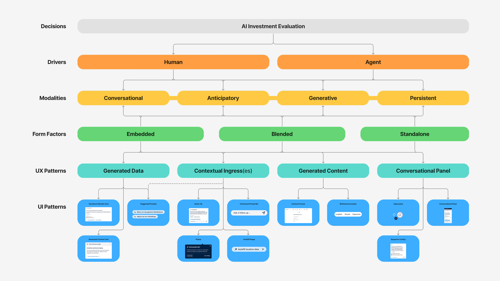

Architecting Workday's AI Design System

TL;DR
Key Features
The Decision Tree
Design logic encoded as a self-grading flowchart. One question — "Will the user get a better result by asking in their own words?" — eliminates half of all chatbot requests. Teams route themselves in under 60 seconds. No meeting required.
The AI Landscape
Teams defaulted to Full Screen Chat because nobody had defined when not to. I mapped every valid pattern onto a cost spectrum — from 1× (Embedded) to 2,000–10,000× (Full Screen Chat) — so teams could see the financial stakes before a line of code.
Embedded Content
The lowest-cost, highest-value default. System-generated insights that appear inside the workflow — no prompt, no panel. The AI becomes part of the page, not a layer on top of it.
Generated Content
A collaborative space for drafting. The AI handles the blank-page problem, then hands control back to refine, insert, or retry. Sources are cited. The human stays in charge.
Chat, Used Sparingly
Reserved for when nothing else fits. Partial Panel for contextual help, Full Screen for complex multi-turn work. One rule: use the smallest surface that gets the job done.
Key Metrics
Compute figures based on technical analysis of AI inference patterns against engineering constraints. Base unit (1×) ≈ the cost of a simple generation (~$0.0001).
What I Actually Did
Pattern audit in Figma
Mapped every AI surface across Workday's product — not to critique it, but to find the patterns hiding in the chaos. Five distinct interaction types emerged from the mess.
Taxonomy and Decision Tree in FigJam
Built the logic as a self-grading flowchart, then rebuilt it. Early versions tried to cover every edge case — too academic, too easy to get lost in. Tested the questions with non-designers, watched where they got confused, and rewrote until the tree felt like a conversation, not a quiz you could fail.
The AI Landscape as a business argument
Mapped all five patterns onto a cost spectrum in Figma — 1× to 2,000–10,000×. This wasn't a design artifact; it was the financial case that gave Design a seat in conversations that used to happen without us.
Rollout through live workshops
Shipped the system via "AI Design Digest" sessions — live facilitated workshops where teams brought real feature questions and routed them through the tree in real time. If a team got stuck or reached the wrong answer, I'd found a flaw. Adoption was the validation.
Deep Dive
Governance Without GatekeepingWhy a menu beat a review queue
The bottleneck was rules, not effort
Teams weren't slow because they lacked skill — they were slow because every AI decision was a fresh debate with no shared standard. The fix wasn't more oversight. It was a finite set of pre-validated choices anyone could navigate alone.
Self-serve scaled the thinking
Removing myself as the gatekeeper was uncomfortable, but a framework that needs me in every room isn't a framework — it's a bottleneck with better documentation. The Decision Tree scaled the logic without scaling headcount.
What Didn't WorkThe directions that didn't survive contact with real teams
Comprehensive coverage collapsed under its own weight
The first Decision Tree tried to address every edge case. It became exhaustive and unusable. A decision framework has to be fast, not complete — so we cut end states until it was quick enough to actually use.
Neutral framing didn't change behavior
Early versions presented all five patterns as equally valid. Honest, but ineffective — PMs kept defaulting to chat. Making Embedded the explicit default, backed by the cost spectrum, was the move that actually shifted adoption. Reframing "Embedded" from a downgrade into the smart, high-value call is what made the savings real.
ReflectionScaling design without scaling headcount
What worked
Pairing the design case with a cost argument changed everything. Executives don't fund design frameworks — they fund solutions to expensive problems. The moment teams could see Full Screen Chat cost 2,000–10,000× more than Embedded, governance became a financial conversation, and Design had the receipts.
What I'd refine
Ship a rough version earlier. We iterated in relative isolation before releasing to teams — but the messiness of the first live sessions taught us more than the internal debate ever did. Watching real teams break a rougher version would have simplified it months sooner.
Built to Outlast MeThe real test of a framework
The measure of a framework
Kimberly Berls, Sinéad Davis Cochrane, Ramona Thompson, Nicole Inagawa, and the AI design team didn't just contribute to this system — they went on to use it, teach it, and build with it independently. That's the measure of a framework: not whether it holds up in a presentation, but whether the people closest to the work trust it enough to run with it on their own. This became the foundation of Workday's Illuminate design system and a company-level FY27 Strategic Growth Objective.
"This is what Workday's AI Experience truly needs to be. This is how we will deliver value to every single customer, and more."
— Ali Fuller, SVP of Product Development, Workday